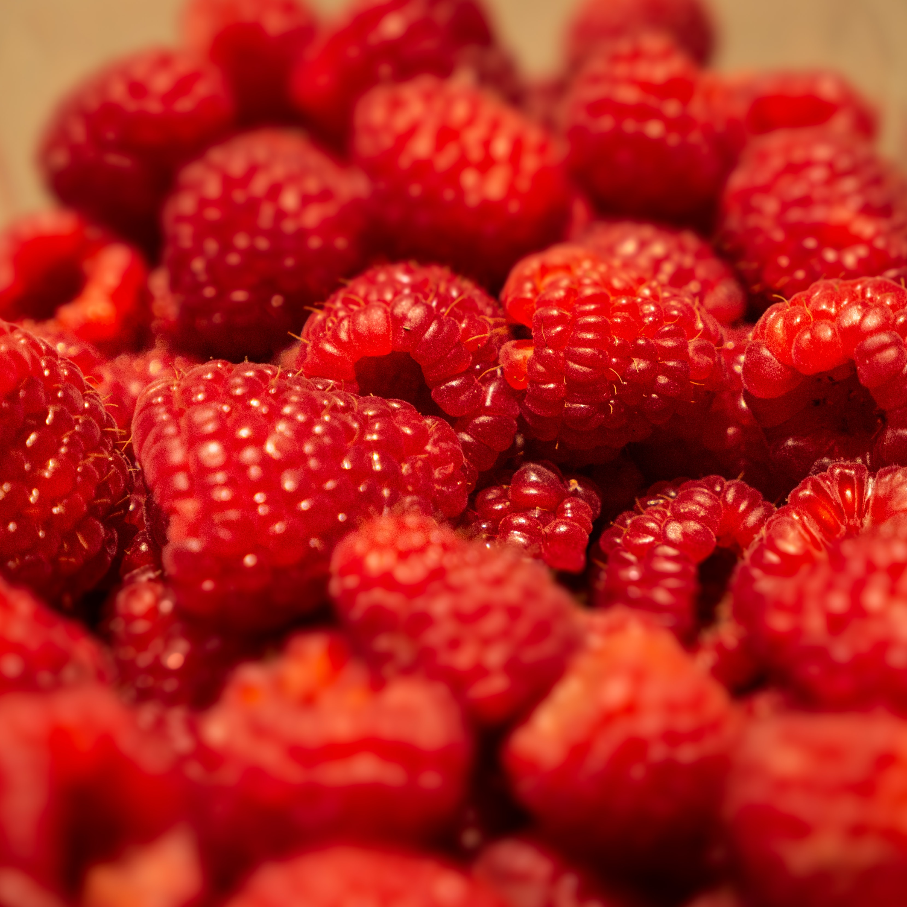

Raspberry Juice
Description
Raspberry provide potassium, essential to heart function, and proven to lower blood pressure. The omega-3 fatty acids in raspberries can help prevent stroke and heart disease. They also contain a mineral called manganese, which is necessary for healthy bones and skin and helps regulate blood sugar.
Ingredients
- 25g of Raspberries
- 350mL of Coconut Water
Steps
- Add 25g of Raspberries to the blender
- Add 350mL of Coconut Water to the blender
- Blend for 30 seconds